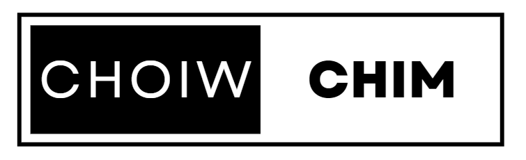

<div class="sidebar-container">
  <aside class="sidebar" [ngClass]="{'smaller': isSidebarSmaller}">
    <header class="sidebar-header">
      
      <i class="logo-icon uil uil-instagram"></i>
    </header>
    <nav>
      <button [routerLink]="['/home']" (click)="hideSearchBox()">
        <span>
          <svg aria-label class color="#262626" fill="#262626" height="24"
            role="img" viewBox="0 0 24 24"
            width="24">
            <path
              d="M22 23h-6.001a1 1 0 0 1-1-1v-5.455a2.997 2.997 0 1 0-5.993 0V22a1 1 0 0 1-1 1H2a1 1 0 0 1-1-1V11.543a1.002 1.002 0 0 1 .31-.724l10-9.543a1.001 1.001 0 0 1 1.38 0l10 9.543a1.002 1.002 0 0 1 .31.724V22a1 1 0 0 1-1 1Z">
            </path>
          </svg>
          <i class="uil uil-home">
          </i>
          <span class="button-text" [class.hide]="isSidebarSmaller || showSearch">Trang chủ</span>
        </span>
      </button>
      <!-- <button (click)="toggleSearchTable()">
        <span>
          <svg aria-label class color="#262626" fill="#262626" height="24"
            role="img" viewBox="0 0 24 24"
            width="24">
            <path d="M19 10.5A8.5 8.5 0 1 1 10.5 2a8.5 8.5 0 0 1 8.5 8.5Z"
              fill="none" stroke="currentColor"
              stroke-linecap="round" stroke-linejoin="round" stroke-width="2"></path>
            <line fill="none" stroke="currentColor" stroke-linecap="round"
              stroke-linejoin="round" stroke-width="2"
              x1="16.511" x2="22" y1="16.511" y2="22"></line>
          </svg>
          <i class="uil uil-search">
          </i>
          <span class="button-text" [class.hide]="isSidebarSmaller || showSearch">Tìm kiếm</span>
        </span>
      </button> -->
      <button [routerLink]="['/events']" (click)="hideSearchBox()">
        <span>
          <svg aria-label class color="#262626" fill="#262626" height="24"
            role="img" viewBox="0 0 24 24"
            width="24">
            <polygon fill="none"
              points="13.941 13.953 7.581 16.424 10.06 10.056 16.42 7.585 13.941 13.953"
              stroke="currentColor" stroke-linecap="round"
              stroke-linejoin="round" stroke-width="2"></polygon>
            <polygon fill-rule="evenodd"
              points="10.06 10.056 13.949 13.945 7.581 16.424 10.06 10.056"></polygon>
            <circle cx="12.001" cy="12.005" fill="none" r="10.5"
              stroke="currentColor" stroke-linecap="round"
              stroke-linejoin="round" stroke-width="2"></circle>
          </svg>
          <i class="uil uil-explore">
          </i>
          <span class="button-text" [class.hide]="isSidebarSmaller || showSearch">Sự kiện</span>
        </span>
      </button>
      <!-- <button [routerLink]="['/inbox']" (click)="isSidebarSmaller = true">
        <span>
          <svg aria-label="Messenger" class color="#262626" fill="#262626"
            height="24" role="img" viewBox="0 0 24 24"
            width="24">
            <path
              d="M12.003 2.001a9.705 9.705 0 1 1 0 19.4 10.876 10.876 0 0 1-2.895-.384.798.798 0 0 0-.533.04l-1.984.876a.801.801 0 0 1-1.123-.708l-.054-1.78a.806.806 0 0 0-.27-.569 9.49 9.49 0 0 1-3.14-7.175 9.65 9.65 0 0 1 10-9.7Z"
              fill="none" stroke="currentColor" stroke-miterlimit="10"
              stroke-width="1.739"></path>
            <path
              d="M17.79 10.132a.659.659 0 0 0-.962-.873l-2.556 2.05a.63.63 0 0 1-.758.002L11.06 9.47a1.576 1.576 0 0 0-2.277.42l-2.567 3.98a.659.659 0 0 0 .961.875l2.556-2.049a.63.63 0 0 1 .759-.002l2.452 1.84a1.576 1.576 0 0 0 2.278-.42Z"
              fill-rule="evenodd"></path>
          </svg>
          <i class="uil uil-location-arrow">
            <span>2</span>
          </i>
          <span class="button-text" [class.hide]="isSidebarSmaller || showSearch">Tin nhắn</span>
        </span>
      </button> -->
      <!-- <button (click)="hideSearchBox()">
        <span>
          <svg aria-label class color="#262626" fill="#262626" height="24"
            role="img" viewBox="0 0 24 24"
            width="24">
            <path
              d="M16.792 3.904A4.989 4.989 0 0 1 21.5 9.122c0 3.072-2.652 4.959-5.197 7.222-2.512 2.243-3.865 3.469-4.303 3.752-.477-.309-2.143-1.823-4.303-3.752C5.141 14.072 2.5 12.167 2.5 9.122a4.989 4.989 0 0 1 4.708-5.218 4.21 4.21 0 0 1 3.675 1.941c.84 1.175.98 1.763 1.12 1.763s.278-.588 1.11-1.766a4.17 4.17 0 0 1 3.679-1.938m0-2a6.04 6.04 0 0 0-4.797 2.127 6.052 6.052 0 0 0-4.787-2.127A6.985 6.985 0 0 0 .5 9.122c0 3.61 2.55 5.827 5.015 7.97.283.246.569.494.853.747l1.027.918a44.998 44.998 0 0 0 3.518 3.018 2 2 0 0 0 2.174 0 45.263 45.263 0 0 0 3.626-3.115l.922-.824c.293-.26.59-.519.885-.774 2.334-2.025 4.98-4.32 4.98-7.94a6.985 6.985 0 0 0-6.708-7.218Z">
            </path>
          </svg>
          <i class="uil uil-heart">
            <em></em>
          </i>
          <span class="button-text" [class.hide]="isSidebarSmaller || showSearch">Thông báo</span>
        </span>
      </button> -->
      <button (click)="openDialog()" (click)="hideSearchBox()">
        <span>
          <svg aria-label class color="#262626" fill="#262626" height="24"
            role="img" viewBox="0 0 24 24"
            width="24">
            <path
              d="M2 12v3.45c0 2.849.698 4.005 1.606 4.944.94.909 2.098 1.608 4.946 1.608h6.896c2.848 0 4.006-.7 4.946-1.608C21.302 19.455 22 18.3 22 15.45V8.552c0-2.849-.698-4.006-1.606-4.945C19.454 2.7 18.296 2 15.448 2H8.552c-2.848 0-4.006.699-4.946 1.607C2.698 4.547 2 5.703 2 8.552Z"
              fill="none" stroke="currentColor" stroke-linecap="round"
              stroke-linejoin="round" stroke-width="2"></path>
            <line fill="none" stroke="currentColor" stroke-linecap="round"
              stroke-linejoin="round" stroke-width="2"
              x1="6.545" x2="17.455" y1="12.001" y2="12.001"></line>
            <line fill="none" stroke="currentColor" stroke-linecap="round"
              stroke-linejoin="round" stroke-width="2"
              x1="12.003" x2="12.003" y1="6.545" y2="17.455"></line>
          </svg>
          <i class="uil uil-create"></i>
          <span class="button-text" [class.hide]="isSidebarSmaller || showSearch">Tạo bài viết</span>
        </span>
      </button>
      <button [routerLink]="['/', loggedInAccount?.username]" (click)="hideSearchBox()">
        <span>
          <div class>
            <div>
              <div class>
                <div class><span class role="link" tabindex="-1"
                    style="width: 24px; height: 24px; border-radius: 50%;">
                    
                  </span></div>
              </div>
            </div>
            <div class style="opacity: 1;">
              <div style="width: 100%;">
                <div class></div>
              </div>
            </div>
          </div>
          <i class="uil uil-profile">
          </i>
          <span class="button-text" [class.hide]="isSidebarSmaller || showSearch">Profile</span>
        </span>
      </button>
      <div [hidden]="!showMoreOptions" class="options-container">
        <ul>
          <button [routerLink]="['/events']" class="option" (click)="hideSearchBox()">
            <span>
              <svg xmlns="http://www.w3.org/2000/svg" width="24" height="24"
                viewBox="0 0 1024 1024"><path fill="currentColor"
                  d="M600.704 64a32 32 0 0 1 30.464 22.208l35.2 109.376c14.784 7.232 28.928 15.36 42.432 24.512l112.384-24.192a32 32 0 0 1 34.432 15.36L944.32 364.8a32 32 0 0 1-4.032 37.504l-77.12 85.12a357.12 357.12 0 0 1 0 49.024l77.12 85.248a32 32 0 0 1 4.032 37.504l-88.704 153.6a32 32 0 0 1-34.432 15.296L708.8 803.904c-13.44 9.088-27.648 17.28-42.368 24.512l-35.264 109.376A32 32 0 0 1 600.704 960H423.296a32 32 0 0 1-30.464-22.208L357.696 828.48a351.616 351.616 0 0 1-42.56-24.64l-112.32 24.256a32 32 0 0 1-34.432-15.36L79.68 659.2a32 32 0 0 1 4.032-37.504l77.12-85.248a357.12 357.12 0 0 1 0-48.896l-77.12-85.248A32 32 0 0 1 79.68 364.8l88.704-153.6a32 32 0 0 1 34.432-15.296l112.32 24.256c13.568-9.152 27.776-17.408 42.56-24.64l35.2-109.312A32 32 0 0 1 423.232 64H600.64zm-23.424 64H446.72l-36.352 113.088l-24.512 11.968a294.113 294.113 0 0 0-34.816 20.096l-22.656 15.36l-116.224-25.088l-65.28 113.152l79.68 88.192l-1.92 27.136a293.12 293.12 0 0 0 0 40.192l1.92 27.136l-79.808 88.192l65.344 113.152l116.224-25.024l22.656 15.296a294.113 294.113 0 0 0 34.816 20.096l24.512 11.968L446.72 896h130.688l36.48-113.152l24.448-11.904a288.282 288.282 0 0 0 34.752-20.096l22.592-15.296l116.288 25.024l65.28-113.152l-79.744-88.192l1.92-27.136a293.12 293.12 0 0 0 0-40.256l-1.92-27.136l79.808-88.128l-65.344-113.152l-116.288 24.96l-22.592-15.232a287.616 287.616 0 0 0-34.752-20.096l-24.448-11.904L577.344 128zM512 320a192 192 0 1 1 0 384a192 192 0 0 1 0-384zm0 64a128 128 0 1 0 0 256a128 128 0 0 0 0-256z" /></svg>
              <span class="button-text" [class.hide]="isSidebarSmaller || showSearch">Sự kiện</span>
            </span>
          </button>
          <button (click)="redirectToPassword()" class="option"
            [routerLink]="['/update-password']" (click)="hideSearchBox()">
            <span>
              <svg xmlns="http://www.w3.org/2000/svg" width="24" height="24"
                viewBox="0 0 32 32"><path fill="currentColor"
                  d="M21 2a8.998 8.998 0 0 0-8.612 11.612L2 24v6h6l10.388-10.388A9 9 0 1 0 21 2Zm0 16a7.013 7.013 0 0 1-2.032-.302l-1.147-.348l-.847.847l-3.181 3.181L12.414 20L11 21.414l1.379 1.379l-1.586 1.586L9.414 23L8 24.414l1.379 1.379L7.172 28H4v-3.172l9.802-9.802l.848-.847l-.348-1.147A7 7 0 1 1 21 18Z" /><circle
                  cx="22" cy="10" r="2" fill="currentColor" /></svg>
              <span class="button-text" [class.hide]="isSidebarSmaller || showSearch">Password</span>
            </span>
          </button>
          <button (click)="logout()" class="option" (click)="hideSearchBox()">
            <span><svg xmlns="http://www.w3.org/2000/svg" width="24" height="24"
                viewBox="0 0 36 36"><path fill="currentColor"
                  d="M7 6h16v9.8h2V6a2 2 0 0 0-2-2H7a2 2 0 0 0-2 2v24a2 2 0 0 0 2 2h16a2 2 0 0 0 2-2H7Z"
                  class="clr-i-outline clr-i-outline-path-1" /><path
                  fill="currentColor"
                  d="M28.16 17.28a1 1 0 0 0-1.41 1.41L30.13 22h-14.5a1 1 0 0 0-1 1a1 1 0 0 0 1 1h14.5l-3.38 3.46a1 1 0 1 0 1.41 1.41l5.84-5.8Z"
                  class="clr-i-outline clr-i-outline-path-2" /><path fill="none"
                  d="M0 0h36v36H0z" /></svg>
              <span class="button-text" [class.hide]="isSidebarSmaller || showSearch">Logout</span>
            </span>
          </button>
          <!-- <button [routerLink]="['/dashboard']" class="option" (click)="hideSearchBox()">
            <span><svg xmlns="http://www.w3.org/2000/svg" width="24" height="24"
                viewBox="0 0 36 36"><path fill="currentColor"
                  d="M7 6h16v9.8h2V6a2 2 0 0 0-2-2H7a2 2 0 0 0-2 2v24a2 2 0 0 0 2 2h16a2 2 0 0 0 2-2H7Z"
                  class="clr-i-outline clr-i-outline-path-1" /><path
                  fill="currentColor"
                  d="M28.16 17.28a1 1 0 0 0-1.41 1.41L30.13 22h-14.5a1 1 0 0 0-1 1a1 1 0 0 0 1 1h14.5l-3.38 3.46a1 1 0 1 0 1.41 1.41l5.84-5.8Z"
                  class="clr-i-outline clr-i-outline-path-2" /><path fill="none"
                  d="M0 0h36v36H0z" /></svg>
              <span class="button-text" [class.hide]="isSidebarSmaller || showSearch">Dasboard</span>
            </span>
          </button> -->
        </ul>
      </div>
      <button (click)="openMoreOptionsDialog()" [class.active]="showMoreOptions">
        <span>
          <svg aria-label class color="#262626" fill="#262626" height="24"
            role="img" viewBox="0 0 24 24" width="24">
            <line fill="none" stroke="currentColor" stroke-linecap="round"
              stroke-linejoin="round" stroke-width="2" x1="3"
              x2="21" y1="4" y2="4"></line>
            <line fill="none" stroke="currentColor" stroke-linecap="round"
              stroke-linejoin="round" stroke-width="2" x1="3"
              x2="21" y1="12" y2="12"></line>
            <line fill="none" stroke="currentColor" stroke-linecap="round"
              stroke-linejoin="round" stroke-width="2" x1="3"
              x2="21" y1="20" y2="20"></line>
          </svg>
          <i class="uil uil-more">
          </i>
          <span class="button-text" [class.hide]="isSidebarSmaller || showSearch">More</span>
        </span>
      </button>
    </nav>
  </aside>
</div>